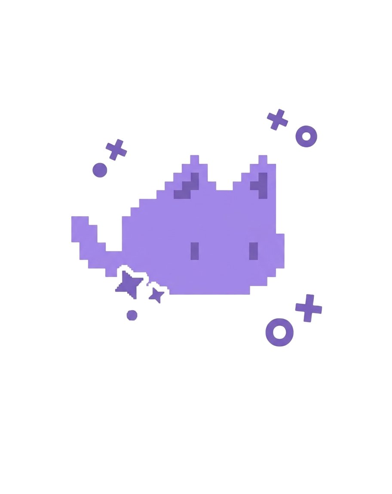

2026
PROJETOS AUTORAIS · ATUAL
Desenvolvimento web
Construção de aplicações web, da organização das ideias às interfaces, integrações e publicação.
Portfólio · Desenvolvedor web
Estudante de Informática e criador de experiências digitais. Aqui estão alguns projetos que transformam ideias em coisas reais.
Conheça um pouco sobre mimDesenvolvedor web em formação
Sou Hugo, estudante de Informática no Grau Técnico e desenvolvedor web em formação. Gosto de transformar ideias e necessidades reais em experiências digitais claras e úteis.
Tenho explorado desenvolvimento front-end, aplicações web e engenharia de requisitos. Valorizo interfaces intuitivas, código organizado e atenção aos detalhes.
Quando não estou programando, estou aprendendo algo novo, descobrindo referências de design ou melhorando meus projetos.
Um pouco do que venho criando
Minhas ferramentas
Passo a passo
PROJETOS AUTORAIS · ATUAL
Construção de aplicações web, da organização das ideias às interfaces, integrações e publicação.
FORMAÇÃO TÉCNICA
Formação em lógica, desenvolvimento web, banco de dados e fundamentos de engenharia de software.
Feitos para aprender e resolver
Uma seleção de aplicações e experimentos que venho construindo na prática.
Nenhum projeto nesta categoria por enquanto.